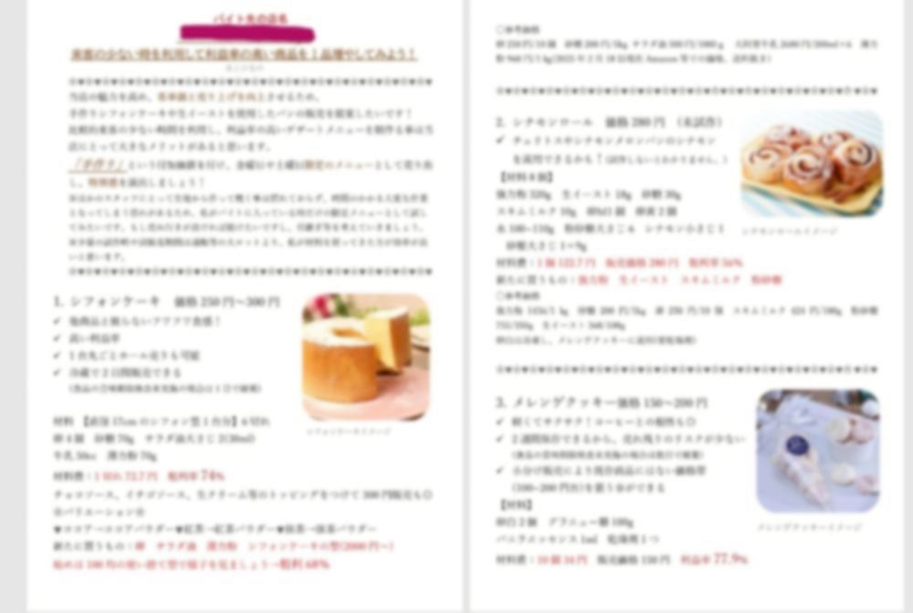
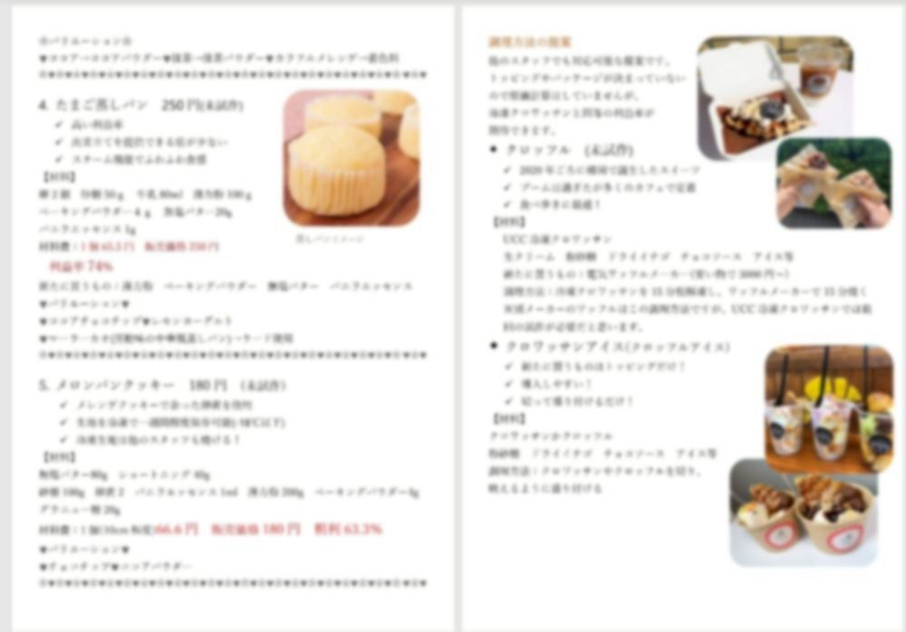
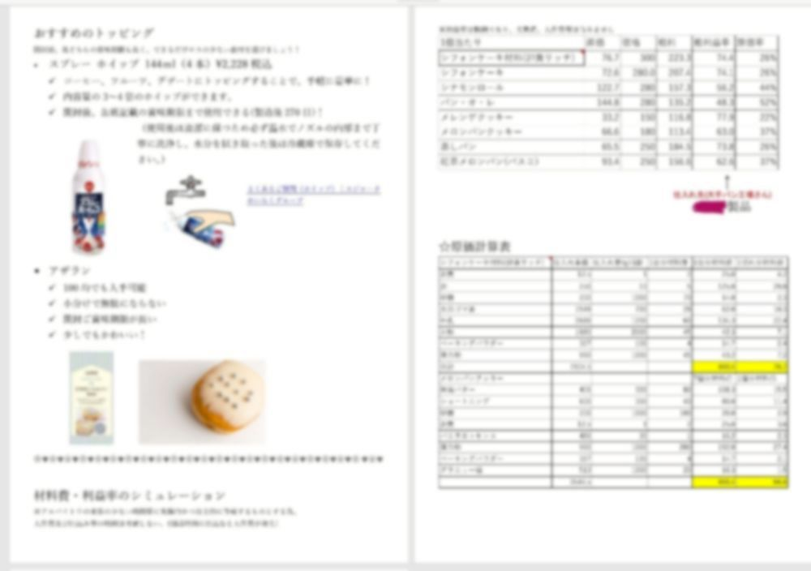
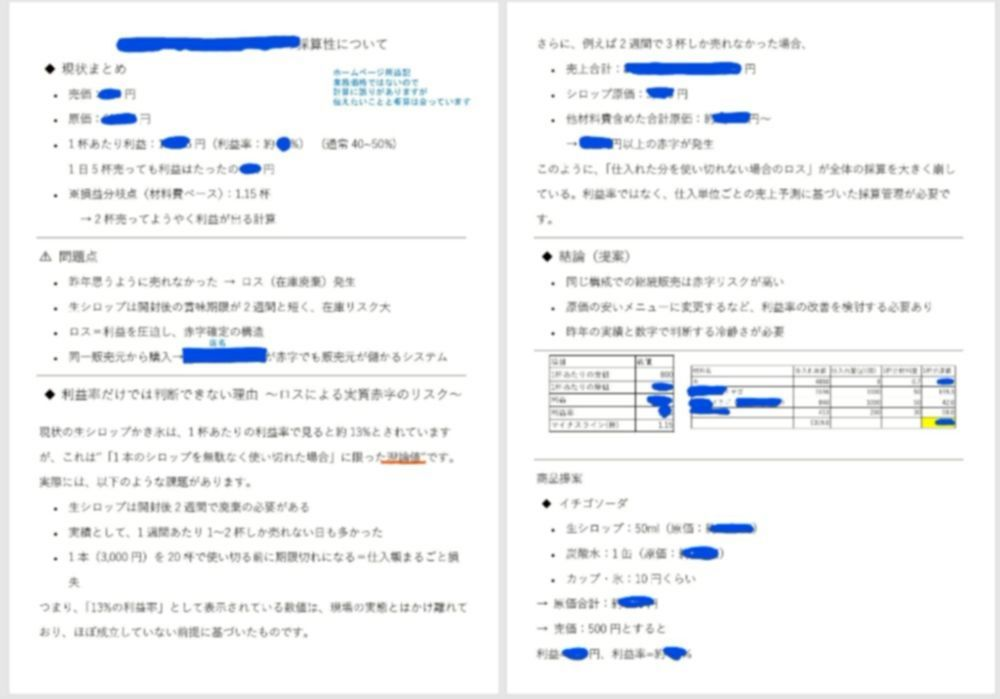
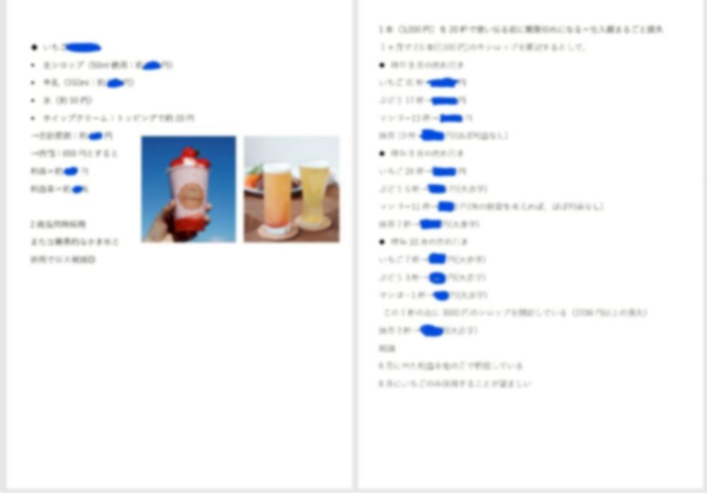
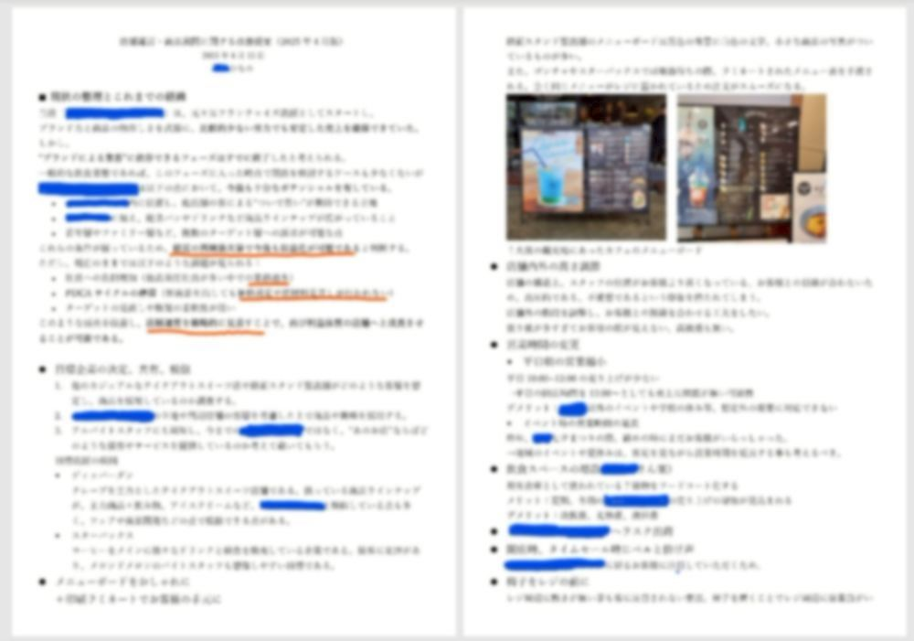
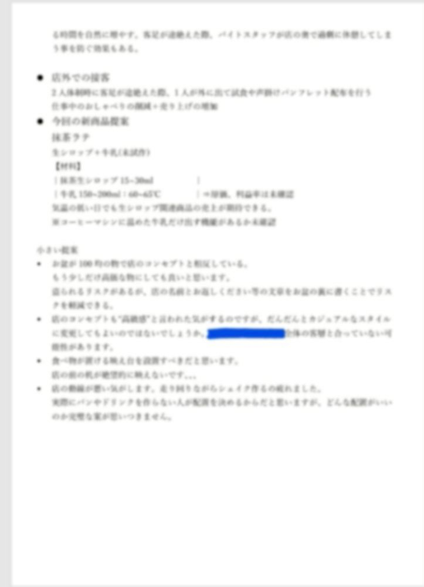
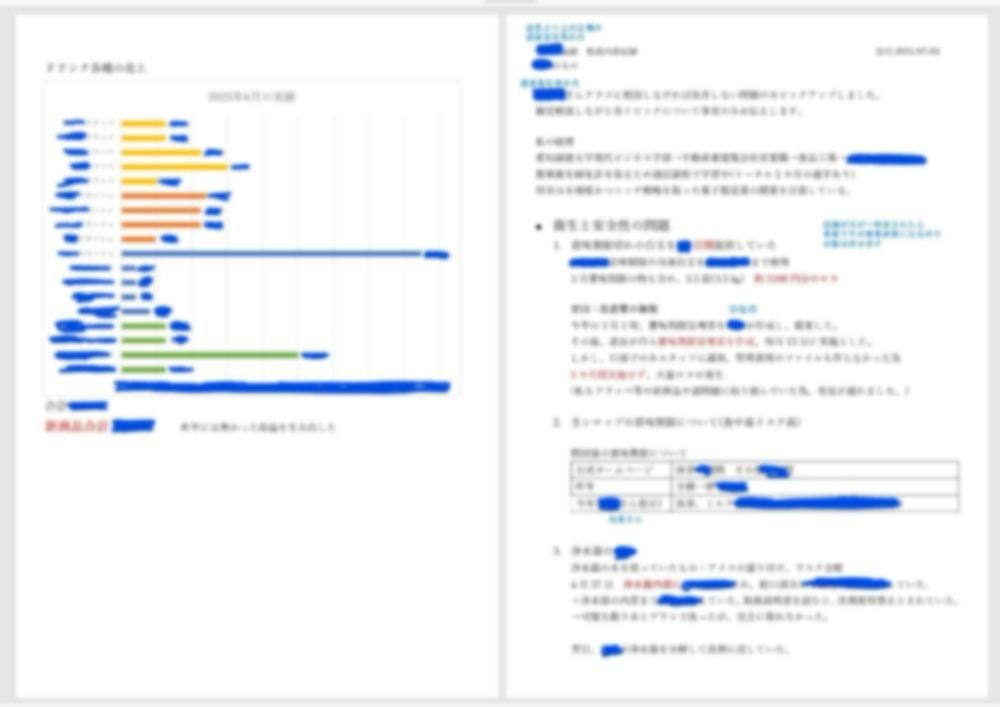
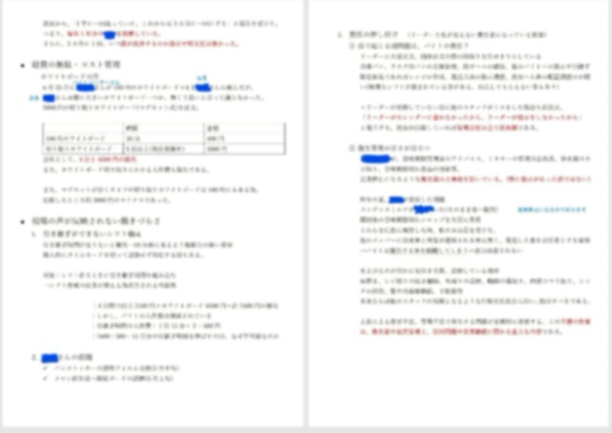
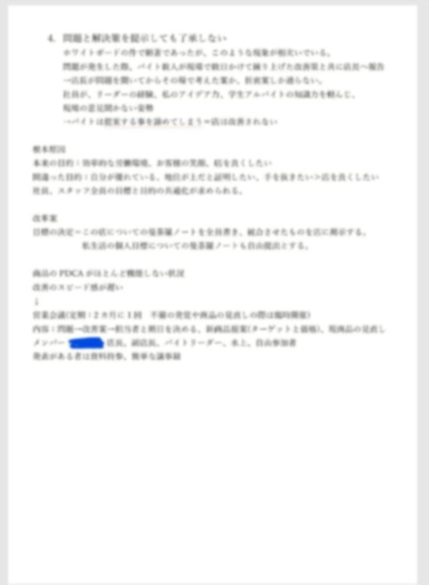

アルバイト奮闘記
菓子製造業の開業に向け、バイト先で実績を積んでいます。
気になる物があれば見ていってくださいね。
愛知県内にある、某菓子パン屋さんでバイトしています。
この店を選んだ理由
この菓子パン屋さんは、元々フランチャイズ店舗だった為、末端から業界全体の空気感を
学ぶのに丁度良いと考えたからです。※私が入る直前にフランチャイズ元は倒産した。
大手と業界の仕組みを学んだ後に、中小やニッチを研究し、開業する土地のライバル企業を調べ、
その隙間に需要があると考えた。(土地トラブルの裁判により計画を一時断念)
激闘！自称元ヤクザとの裁判記録～焼き菓子屋さん開業したかっただけなのに～
継続した企業経営のため、バイト先で業界雑誌を盗み読みしながら知識を蓄えています。
失礼ながら、全く知らない業界だったので、本格的なお店でレシピを学ぶよりも、業界全体を見渡した
アプローチをしたいと思い立ち、この店を選びました。レシピ等の本格的な知識よりもマーケティング
や業界全体の構造に興味がありました。
製菓のクオリティを学ぶなら、他のケーキ屋さんに行くべきでしたが、観光地の路面販売やカフェにも
興味があるので、なかなか理解しがたいかもしれませんが、この店を選択しました。
店には衛生面など、改善点だらけ！自分で考えて改善他の店では体験できない実践的な経験を積めました。 さらに、入社直後から赤字に陥っており、不適切な経営体系の例として学習しています！嬉しいね。 効率化と正論ではなく年功序列や感情論を優先する人とのちょっとした衝突もありますが、 話し方や説得方法などを模索しています。この経験は、これから役立つと思います。 メモみたいな物です。興味のある方お読みください。
●新商品提案
時系列順です。-
2025年1月店長から、この店が赤字であるため、人員削減(ワンオペを増やす)事を伝えられた。
私が新商品の提案をする事で、この店の赤字の解消に役立つ＋私の目標である菓子店開業への経験になると考えた。
新商品提案書


フラッペ提案書


運営改善策

運営責任者面談



店長は過去に、他のバイトが口頭で伝えた新商品提案を無視している。
私は、この提案が無視されたのは利益率やオペレーションの点で不確定要素が多かった事が原因だと考え、 利益率など数字を根拠とした社会人として通用するレベルの提案書を作成すれば採用されるだろうと考えた。
2025年2月 バイト入社半年で店長に提出した提案書。 店の状況、設備、人員等を鑑みて実装できる提案にした。 新しい作業が不安なスタッフに急に製造を任せる事の無いよう、限定メニューとして提案。 AIのコピペでも良かったが、熱意が伝わるように、私が全て手作業で完成させた。 （AIに文書の見やすさと書き方、計算式は最終確認してもらった。）
材料費の計算のため、全ての原材料の参考価格を調査。 材料費や粗利率を作成し、社会人として完璧に仕上げた。 また、現実性を持たせるため、現在仕入れている商品との利益率の比較を作成。
店長の反応：笑顔で「良いじゃん！作ったの？ありがとう！」 と言いながら到底読んでいるとは思えないスピードで流し見。棚に収納。 その後棚から出されることも、話題にされる事すら無かった。
提案書が未熟な事が原因だと思ってもう一度チャレンジした。
2025年4月店長に提出。
この資料は、新商品の「フラッペ」を提案したものである 原価や利益率を試算し、既存商品の問題点を改善する目的でまとめた提案書。
・原価と利益率の計算：1杯あたりの原価と販売価格を試算し、利益率を調整。
・販売効率の改善：仕込みや提供の手間を減らし、アルバイトでも簡単に作れるよう工夫。
・既存メニューの課題解決：原価の高さやロスの多さを補う新メニューとして位置づけ。
・収益改善の狙い：赤字を出さずに売上アップを目指した、実践的な改善策です。
店長の反応：笑顔で「良いじゃん！作ったの？ありがとう！」
と言いながらページをペラペラして棚に収納。
4月15日 無視を見越してて2段構え！さらなる改善案をスピード提出。
店長の反応：笑顔で「良いじゃん！作ったの？ありがとう！」棚に収納。
資料は完璧である。何かがおかしい。 そこで、これまでの提案書を店長の上司に提出。これまでの書類にしっかり目を通してお話を聞いてくださった。
この3日後、店長からフラッペの試作するよう指示がでた。
始めの提案から2カ月。フラッペ単体の提案から10日。実に長かった。
ちなみにこの店長、他店舗の中年男性のバイトさんの意見は割とすぐ聞くらしいです。
根拠があろうが、数字が正しかろうが、大学(その分野についての専門)出てようが、
バイトや若い女の意見は無視される
この世には、提案が正しいかどうかではなく、誰が言ったかを重視する人もいる。
という社会の厳しさを学びました。
皆に伝えたい事：閉鎖的な職場での要求は継続的かつ外部へのアプローチ必須。
職場の閉鎖的な環境、上司の考え方やメンタルが一因という簡単な事に気づかず自分を責めていた。2025年7月、店長の上長である、運営責任者の方に面談をお願いした。 店の状況を正確にお伝えし、オペレーションを改善する事が目的。 面談で伝えたい内容を予め資料として作成
新商品の導入や現場改善についての議論が行われました。
・提案されたアイデアを試作・導入に向け検討。
・店舗運営での非効率の放置と衛生面の改善。
・放置されていた提案が上司を通して採用され、現場に変化。
・今後は効率化と利益確保に向け、経営層と現場のコミュニケーション継続が重要。
また、面談前に「だから、スターバックスはうまくいく。スタバ流リーダーの教科書」毛利英明
を重要ポイントに付箋を貼ってお渡しした。本当に読んできてくださって嬉しかった。
さらに、
私が提案したフラッペやソーダ等、新商品の売上が合計■■■■円を記録した事もお伝えした。
(販促方法とか、他の提案も通ればもっと上がったのに。)私の目標である菓子製造業開業とその継続に向けたアドバイスもくださった。 特に人を統率する事の難しさと、内部の対人関係であっても戦略を練る重要性をお話して頂いた。
●業務改善
- ミキサーの洗い方 家庭用ミキサーでドリンクを作っていた。 洗浄方法について特に上長から指示が無かった為、バイトは分解洗浄しなかった。 ミキサー内部にシェイクが溜まり、■■が発生。蓋を開けただけで■■がする状態。 私が、他のバイトへ分解洗浄の方法について周知するためwordでマニュアルを作成。 洗浄方法の周知が進み、現在は清潔な状態が保たれている。
- 賞味期限管理表 昨年は多数の賞味期限切れを店長に報告。過去、破棄を放置したバイトではなく 発見した私だけが注意を受ける事があった。そこで、再度注意される前に賞味期限管理表を作成、提案。 過去、店に賞味期限管理表が存在していた事が判明。 店長が過去の表を更新し別表を作成。月1で実施が決定。 しかし、賞味期限管理表ファイルは作られず、他のメンバーへの周知が足りなかった為 再度、賞味期限切れが発生。 撲滅するまで諦めません。
その他多くの改善を発案、実施
●その他記録
ここからは日記とかメモ書きのような物です。 主観多め。2025年9月4日記録 先月からリーダーの提案でＭＴを月一で開催する事になった。 私も参加する事にした。提案資料と議事録をボランティアで作成する事にした。 問題について何時報告したか記録が残れば、解決までの時間が可視化され、改善スピードを上げる事ができる。 最近は、他のバイトの子も改善案や新商品を発案した私に言ってくれるようになった。 これを織り交ぜて報告する。私が言った意見は通りにくいので、 誰の意見かわからなくする事で提案の採用率を上げる作戦である。
8月記録：MT(参加者：店長、リーダー、私)
参加者のシフトの都合上、制限時間が決められていた。 参加者に店内のオペレーションや設備についての課題をA4で3ページ、 新商品について1ページのword資料として作成、提出。MT前半に店長による店の系列や収支のお話(30分)
残り時間が30分未満となってしまった為、私は資料の全てを提案する事は難しいと判断。 そこで、オペレーションや設備についての課題を中心に報告した。
初期と比べ、確実に採用される提案が増えているが、今回の打率としては惨敗である。
8月記録MT続き
店長に、ミーティングの続きを2週間後にやりませんかとLINE、承諾を得た。 追加で資料を作成し挑んだが、 開始が遅れた＋進行が遅い店長「急に決まって、ミーティングの続きだと思っていなかった」
これにどう対処していくかが私の課題である。